Начало работы
Trader поддерживает два режима работы: с включенным EDCE и без. Если EDCE включен, то данные о текущем корабле,
текущей системе/станции, а также информация о ценах на рынке станции будут обновляться автоматически.
Если же режим EDCE выключен, то все данные необходимо будет обновлять вручную.
Запуск программы
Для запуска программы необходимо распаковать скаченный архив в удобное место и запустить файл client-x.x.exe.
При первом запуске необходимо настроить параметры доступа к EDCE, параметры поиска, заполнить информацию о корабле и настроить фильтр.
Выбор языка
Для выбора языка необходимо выбрать пункт меню Настройки/Язык и в подменю выбрать требуемый язык.
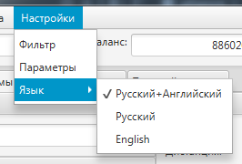
На данный момент доступны следующие варианты:
- Русский+Английский - русский интерфейс программы и английские названия товаров/сооружений и иных данных из Elite: Dangerous;
- Русский - русский интерфейс программы и русские названия товаров/сооружений;
- English - английский интерфейс программы и английские названия товаров/сооружений;
При первом запуске используется язык системы, если язык не поддерживается, то по умолчанию устанавливается Русский+Английский.
Настройка EDCE
Для активации EDCE необходимо нажать кнопку 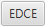,
после чего на экране появиться окно подключения к EDCE.
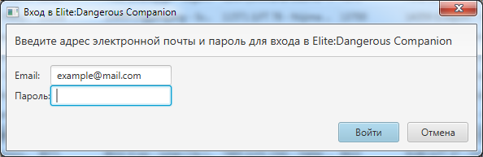
В поле Email необходимо ввести адрес электронной почты, на который зарегистрирован аккаунт в Elite: Dangerous.
В поле Пароль вводится пароль от аккаунта Elite: Dangerous, данный пароль не сохраняется программой, используется только
для авторизации на серверах Frontier Developments.
Если это первый запуск программы, то после входа появится окно ввода кода активации.
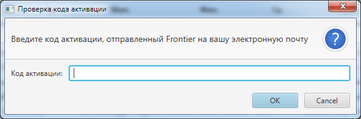
Данный код можно найти в почтовом ящике, указанном при входе, письмо отправляется автоматически сервером
Frontier Developments при первом входе.
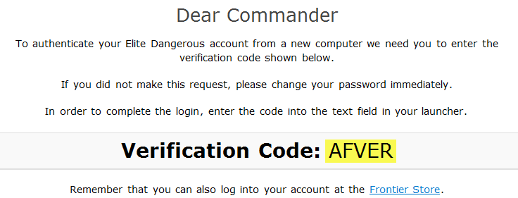
При удачном входе, надпись на кнопке поменяется на зеленый цвет, а в случае ошибки надпись будет красной.
Если необходимо отключить EDCE, то можно отжать кнопку EDCE, либо нажать кнопку Отмена при входе.
Настройка профиля
После подключения к EDCE, будут заполнены поля: имя пилота, текущий баланс, текущая система, текущая станция, размер трюма,
объем топливного бака. Если EDCE не активировано, то данные поля необходимо заполнить вручную.
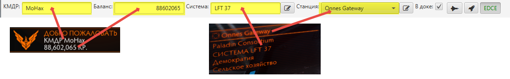
{kind=link}
Затем необходимо внести информацию о массе корабля и текущем классе FSD двигателя на панели с информацией о текущем корабле.
Для отображения данной панели необходимо нажать кнопку 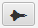.
Информацию о массе корабля и двигателе можно получить, находясь на станции, в экране Снаряжения.
При корректном вводе всех данных минимальная дальность в программе и в игре должны быть соизмеримы.
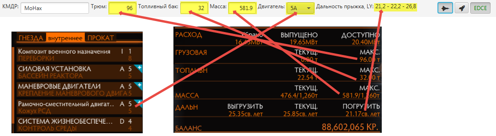
{kind=link}
Настройка параметров поиска
Для настройки параметров поиска необходимо выбрать пункт меню Настройки/Параметры.
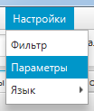
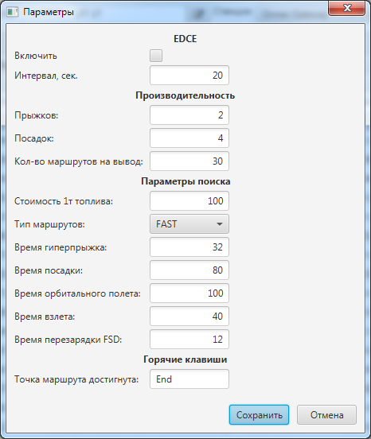
Поле Интервал отвечает за частоту опроса сервера EDCE с целью получения данных
о текущих системе и станции.
Поля Количество прыжков/посадок предназначены для настройки производительности поиска.
Количество прыжков - максимальное количество прыжков между двумя станциями, влияет на время
постройки графа. Для слабых машин лучше устанавливать значение в 3-4 прыжка, при максимальной дальности прыжка 25 LY.
Для производительных можно увеличить до 6. Зависимость геометрическая, поэтому больше 10 ставить не рекомендуется.
Количество посадок - максимально количество станций в маршруте, влияет на время поиска.
Тип маршрута - определяет приоритет выбора пути: быстрый или экономичный.
Временные характеристики - используются при расчете приблизительного времени прохождения маршрута.
Настройка фильтра
Фильтр используется для предварительной фильтрации станций перед поиском маршрута.
Для настройки фильтра необходимо выбрать пункт меню Настройки/Фильтр.
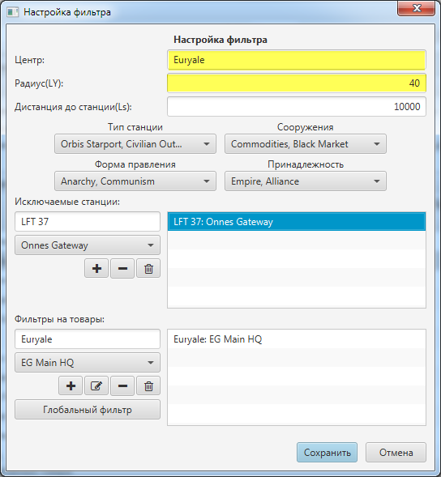
Рекомендуется установить центральную систему, в окрестностях которой будет происходить поиск маршрута и
радиус сферы поиска 40-60 LY.
Поле Дистанция до станции определяет максимальное расстояние, на которое будет удалена
станция в маршруте.
Поля Тип станции, Сооружения, Форма правления, Принадлежность
позволяют указать, какие станции будут включены в поиск.
Блок Исключаемые станции задает список конкретных станций, которые необходимо исключить из поиска.
Для добавления станции в исключаемый список необходимо ввести название системы, затем выбрать станцию и нажать кнопку 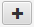.
Блок Фильтры на товары позволяет задать фильтрацию по товарам на рынках станций. Возможно задать как отдельный фильтр
на конкретную станцию, так и фильтр на все станции сразу.
Для добавления фильтра на рынок конкретной станции необходимо: ввести название системы, затем выбрать станцию,
нажать кнопку и в открывшемся окне установить требуемые фильтры.
Для добавления фильтра на все станции нажмите кнопку 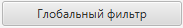
и установите требуемые параметры:

Флаг Только контрабанда запрещает продажу легального товара на станции.
Если установлен флаг Только легальные, то при расчете прибыльности маршрута будут учитываться только легальные
товары на данной станции.
Флаги Не продавать и Не покупать позволяют запретить продажу,
либо покупку всех товаров на данной станции.
Также возможно запретить покупку/продажу конкретного товара на данной станции.
Поиск маршрута
Trader позволяет искать наиболее выгодный маршрут, либо наиболее быстрый маршрут.
Для поиска маршрута, необходимо перейти на вкладку Маршруты, выбрать исходную систему или
станцию и нажать кнопку 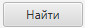. При необходимости можно указать конечную систему или станцию в соответствующем поле.
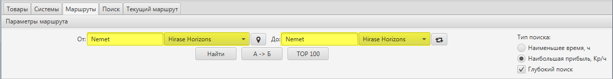
{kind=link}
Кнопка 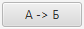 B"> позволяет найти простой маршрут
от одной точки к другой, без промежуточных остановок.
Параметр Тип поиска служит для выбора, какой маршрут искать: выгодный, либо быстрый.
Снятие флага Глубокий поиск позволяет ускорить поиск, в этом случае проверяются только
начальная, конечная станции и станции, необходимые для выполнения миссий.
Для поиска оптимального маршрута при выполнении миссий, помимо начальной станции, необходимо сформировать список миссий.
Поддерживаются курьерские миссии, миссии по доставке и миссии по поставке товара.

Для добавления миссии необходимо выбрать тип миссии, заполнить поля описания миссии и нажать кнопку
.
Время выполнения миссии задается в формате 1д2ч3м4с, где 1 - количество дней, 2 - часов, 3 - минут, 4 -секунд.
После добавления всех миссий необходимо нажать .
При поиске учитываются затраченное время, наличие товара для миссий по поставке и размер награды.
Количество миссий не ограничено.
После окончания поиска, на экран будет выведен список подходящих маршрутов, из которого необходимо выбрать
наиболее предпочтительный и нажать кнопку ОК. После чего данный маршрут будет установлен как текущий.
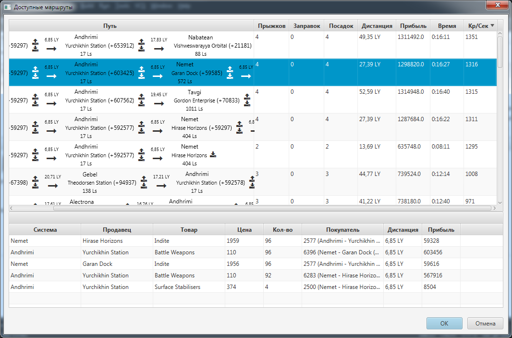
{kind=link}
Текущий маршрут
Текущий маршрут отображается на вкладке Текущий маршрут, следующая точка маршрута выделена цветом и
дублируется на экране помощника.
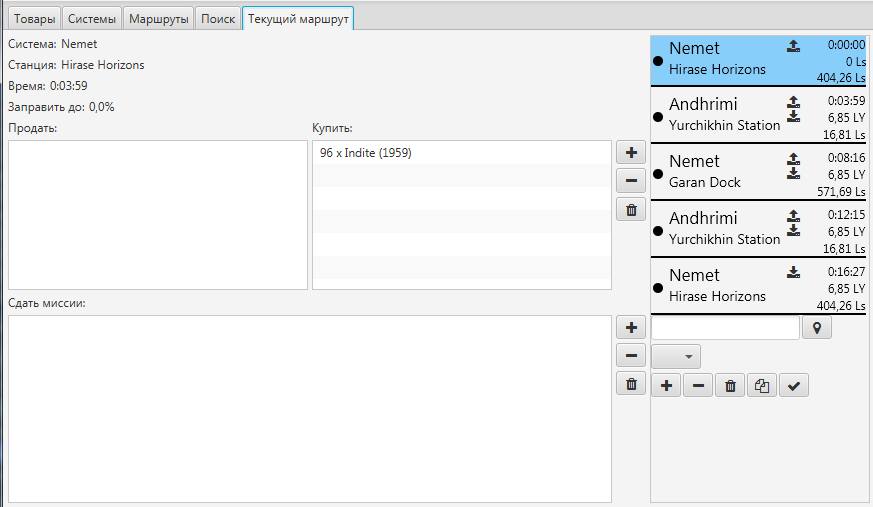
{kind=link}
Если включен сервис EDCE, то обновление следующей точки маршрута будет происходить автоматически, при получении
информации от EDCE о текущем положении.
Если же EDCE выключено, то обновление происходит после изменения
текущей системы/станции на панели профиля. Также можно нажать кнопку
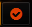 на экране помощника,
либо можно воспользоваться горячей клавишей.
При переходе к следующей точке, название следующей системы копируется в буфер обмена.
Помимо просмотра маршрута, также возможно редактирование маршрута: добавить/удалить перевозку товаров,
миссии, точки маршрута. Если при добавлении миссии, ее невозможно выполнить без добавления новых точек маршрута,
то будут предложены варианты изменения текущего маршрута.
Новые точки маршрута можно добавить только в конец маршрута, удаляется также только последняя точка маршрута.
Окно помощника
Окно помощника вызывается нажатием кнопки 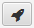.
Помощник отображает название следующей системы, расстояние до нее, название станции и расстояние до нее,
приблизительное время полета.
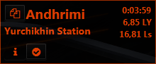
Если в системе не планируется посадка, то название станции не выводится.
После посадки на станцию, помощник также отображает какое количество топлива заправить,
список товаров для покупки/продажи и список миссий, которые необходимо завершить.
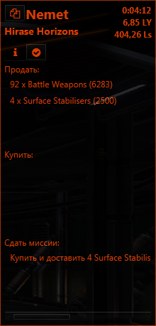
Кроме того, при нажатии кнопки 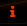 можно
посмотреть список станций, которые будут посещены далее по маршруту и список товаров продаваемых на них.
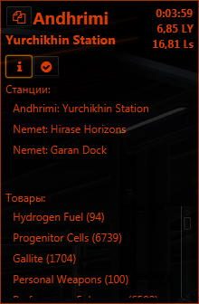
Кнопка позволяет перейти к следующей точке маршрута, не дожидаясь получения информации от EDCE. При этом изменяется текущая система и станция.
Редактирование БД
Редактор БД открывается после выбора пункта Редактор БД в меню Правка
Редактирование списка товаров
Для добавления/удаления товара необходимо в окне редактора, на вкладке Товары, нажать правую клавишу мыши
и в контекстном меню выбрать пункт Добавить, либо Удалить.
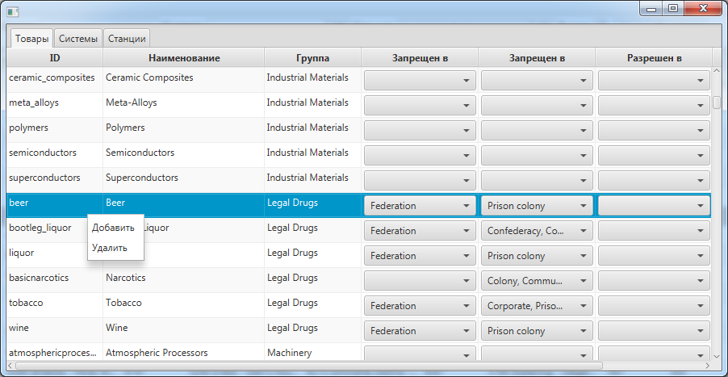
{kind=link}
При добавлении товара необходимо будет указать ID (уникальный идентификатор, используется для определения
перевода в языковых файлах и при импорте), а также группу, к которой принадлежит товар. Если группы не существует,
то можно добавить, нажав кнопку .
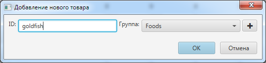
Помимо этого, добавление товара возможно произвести через соответствующую кнопку на экране редактирования станции.
Также в окне редактора можно отметить, в каких правительствах и фракциях данный товар запрещен/разрешен.
Статус разрешен, имеет приоритет над статусом запрещен, а также фракция имеет приоритет над правительством. Таким
образом, если товар запрещен у определенного правительства, но разрешен у фракции, то на станции с данным правительством
и фракцией товар будет разрешен.
И соответственно, если товар разрешен у определенного правительства, но запрещен
у фракции, то товар также будет разрешен, т.к. приоритет у разрешения выше.
Если же товар запрещен у правительства, а у фракции не указан статус, то товар будет запрещен на
всех станциях с данным правительством, у всех фракциях.
Эффекты от Силы имеют более высокий приоритет и перезаписывают данные параметры.
Редактирование списка систем
Для добавления/изменения/удаления системы необходимо в окне редактора перейти на вкладку Системы,
нажать правую клавишу мыши и в контекстном меню выбрать пункт Добавить, Изменить,
либо Удалить.

При добавлении системы необходимо указать название системы, ее координаты, тип правительства, принадлежность к фракции и
принадлежность к Силам. Данную информацию можно найти на галактической карте.
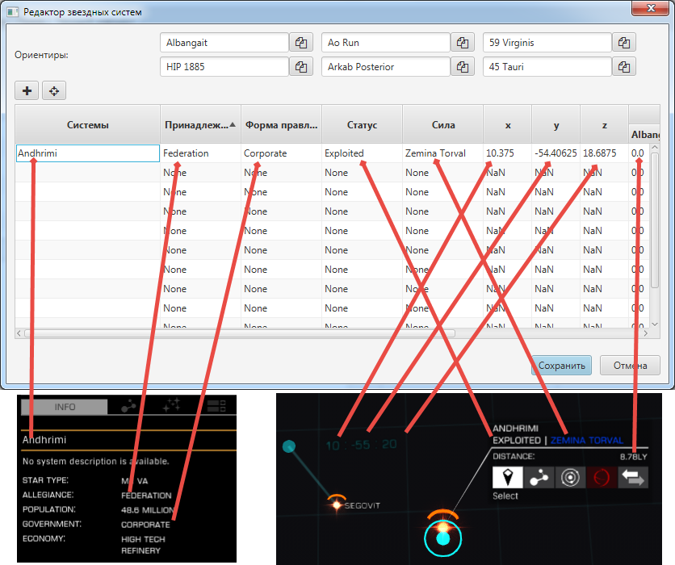
{kind=link}
Для более точного определения координат необходимо указать расстояния до 6 соседних систем и
нажать кнопку  ,
после чего рассчитаются координаты данной системы, которые затем необходимо сравнить с галактической картой. Если
цифры явно не совпадают, то нужно выбрать другие соседние системы и повторить расчет.
,
после чего рассчитаются координаты данной системы, которые затем необходимо сравнить с галактической картой. Если
цифры явно не совпадают, то нужно выбрать другие соседние системы и повторить расчет.
Если у программы есть информация о предыдущей системе, то соседние системы выбираются автоматически.
После ввода расстояния до соседней системы, название следующей системы копируется в буфер обмена автоматически.
Новая система также добавляется, если текущая система, полученная от EDCE, отсутствует в базе. При этом необходимо будет заполнить незаполненные поля, о чем будет свидетельствовать иконка на панели профиля.
Редактирование списка станций
Для добавления/изменения/удаления системы необходимо в окне редактора перейти на вкладку Станции,
нажать правую клавишу мыши и в контекстном меню выбрать пункт Добавить, Изменить,
либо Удалить.
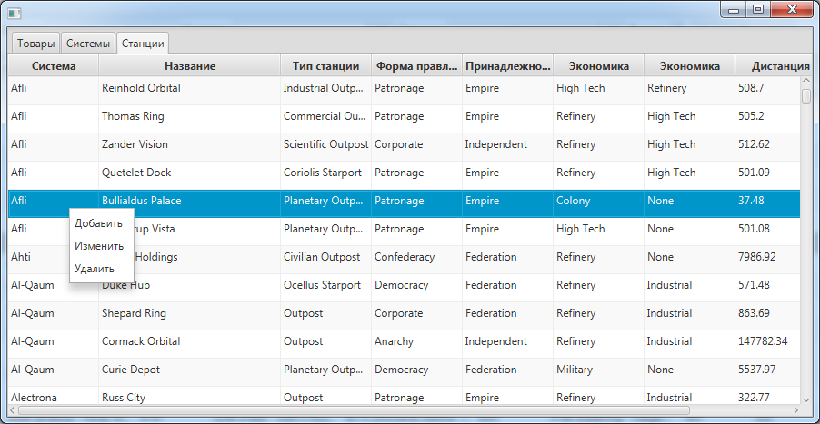
{kind=link}
При добавлении станции необходимо указать название станции, расстояние до станции, тип правительства,
принадлежность к фракции, тип станции, экономику и список сооружений. Данную информацию можно найти на системной карте.
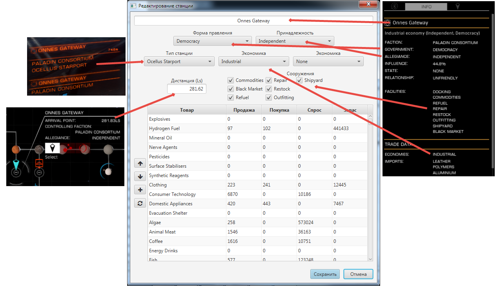
{kind=link}
Если на станции есть рынок/космоверфь, то также необходимо заполнить информацию о продаваемых и покупаемых
товарах/кораблях.
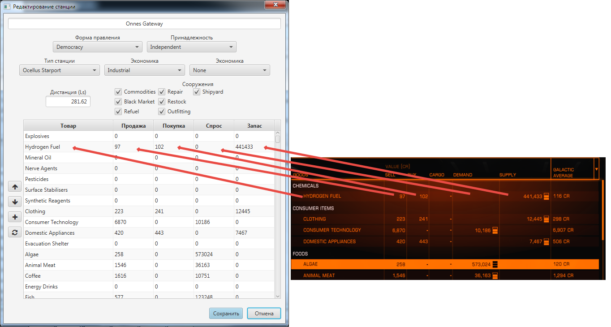
{kind=link}
Новая станция также добавляется автоматически, если текущая станция полученная от EDCE отсутствует в базе. При этом
необходимо будет заполнить не заполненные поля, о чем будет свидетельствовать
иконка  на панели профиля.
Помимо этого, при включенной системе EDCE, данные о торгуемых товарах на рынке будут обновлены автоматически после
посещения станции.
на панели профиля.
Помимо этого, при включенной системе EDCE, данные о торгуемых товарах на рынке будут обновлены автоматически после
посещения станции.